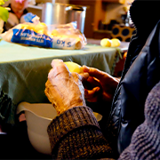

ÉTAPE 1
Peler et laver les pommes de terre, puis les couper en parallélépipèdes à base carrée d’environ 1,5 cm de côté (en d’autres termes, en grosses frites). Les laver à nouveau et bien les sécher dans un torchon à vaisselle propre.
ÉTAPE 2
Les faire cuire une première fois dans l’huile chauffée à 150°C, pendant 7 à 8 minutes. Il ne faut pas surcharger la friteuse: pour 1kg de pommes de terre, cuire 1/3 des frites à la fois.
ÉTAPE 3
Laisser refroidir les frites.
ÉTAPE 4
Cuire les frites une seconde fois dans l’huile chauffée à 190°C pendant environ 3 mn (elles doivent être croustillantes sans être dures).
ÉTAPE 5
Servir les frites aussitôt.